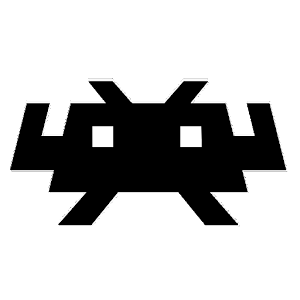
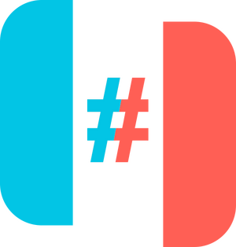
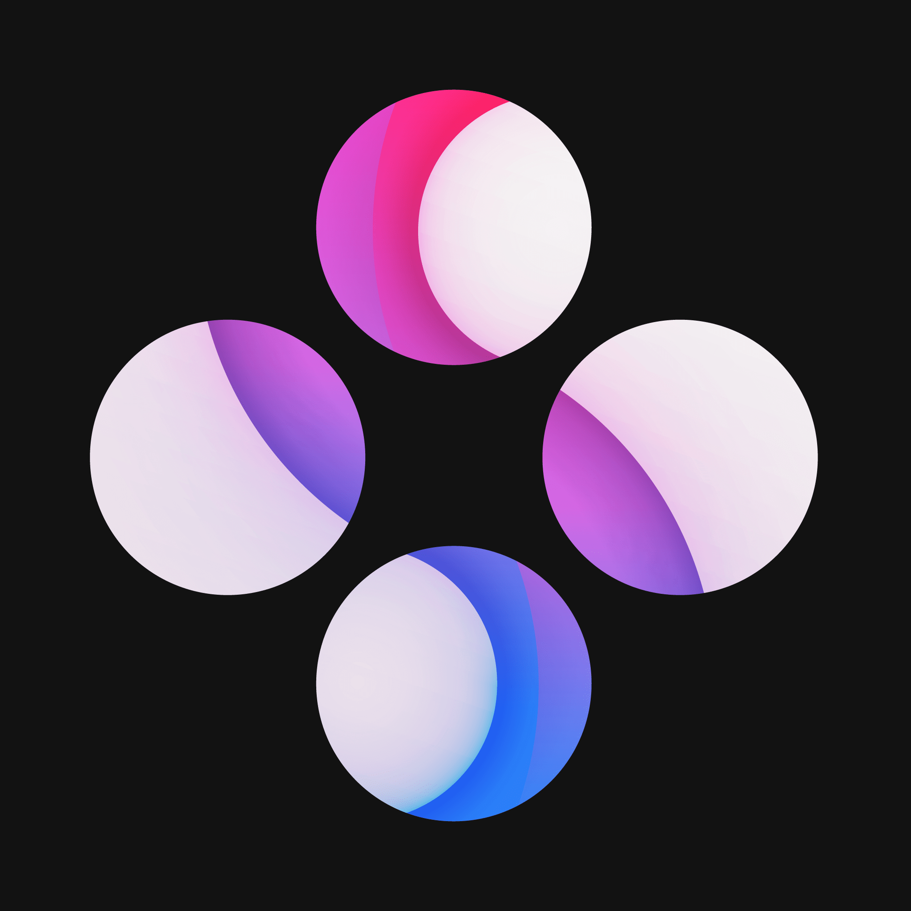
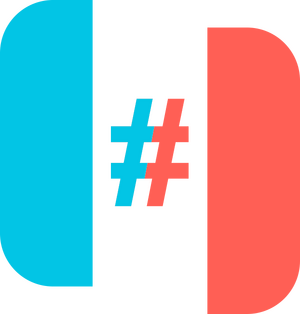
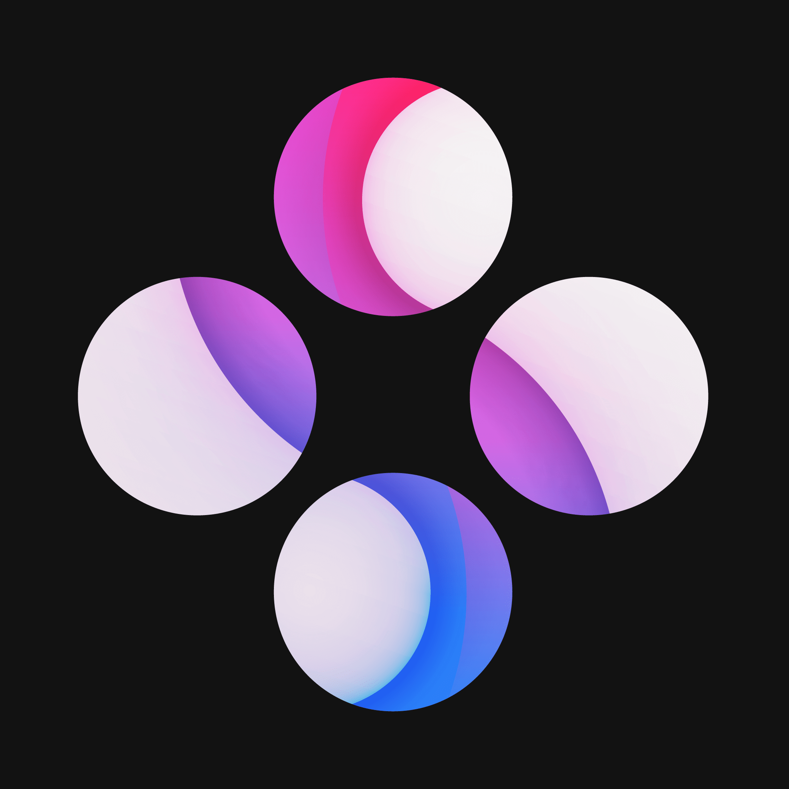
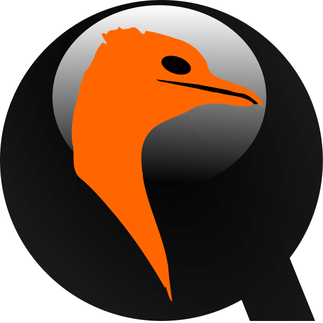
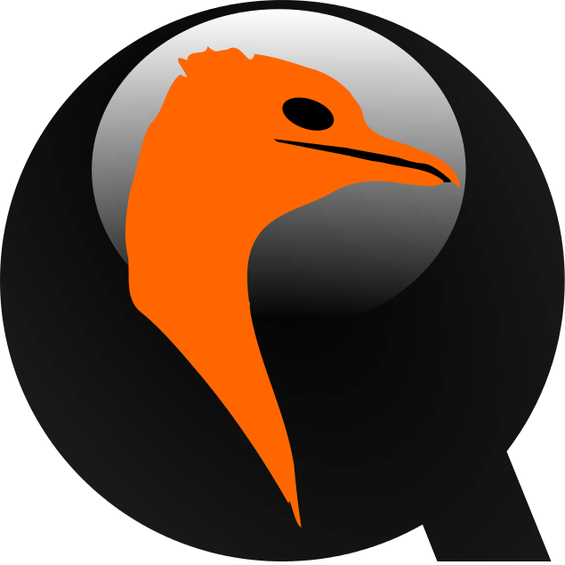
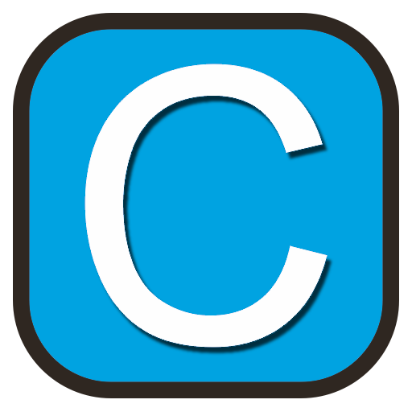
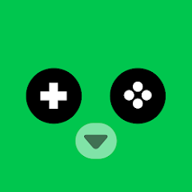

Wat is een emulator?
Een emulator is iets wat ander hardware na kan doen. Dit is handig als je het gewenste hardware niet hebt of je huidige niet wilt bombarderen (niet te verwarren met Safouan). Je kan ook andere consoles nadoen zoals de Nintendo Wii (U), Switch, Playstation, Xbox etc. Je hoeft hier niet voor te betalen (net zoals (bijna) alles hiero) en is redelijk eenvoudig te doen. Voor games moet je wel eerst een rom downloaden, maar linkje zet ik er gewoon bij.
Emulators zelf zijn helemaal legaal, alleen de roms niet.
RetroArch (FOSS)
RetroArch is een alles-in-één emulator. Het kan bijna elke (op switch na dan) Nintendo console nadoen en een paar extra zoals Playstation 1/2. Retroarch gebruikt cores, wat gewoon kleine emulators zijn voor RetroArch. Om een core te installeren moet je naar main menu > load core > download a core > jou core naar keuze. Als je het via Steam gedownload hebt, moet je het als een DLC downloaden. Ik gebruik altijd de installer (64bit) van de website, maar dat is je eigen keuze. RetroArch kan ook op Android en veel meer OS's. Roms download je van Emulator Games
Standalone
Standalone emulators staan los van bijvoorbeeld RetroArch. Zie reddit voor een paar voorbeelden. Dit zijn mijn aanbevelingen:
Yuzu (FOSS), Ryujinx (FOSS) en Skyline (FOSS)
Dit zijn Nintendo Switch emulators. Ryujinx heeft een LDN build om online te spelen en Yuzu heeft het ingebouwd. Ik vind Ryujinx persoonlijk fijner, maar Yuzu is soms wat sneller. Voor keys en firmware (alleen voor Ryujinx) kan je RyuSAK gebruiken. Roms downloaden doe je op nsw2u of Ziperto. Firmware voor Yuzu kan je downloaden op Darthsternie.
Hoe installeer ik Ryujinx (Switch emulator)?
 



BlueMaxima's Flashpoint (FOSS)
BlueMaxima's Flashpoint is een emulator voor oude Adobe Flash games, denk aan spele.nl. Deze games zijn opgeslagen en kan je gewoon weer spelen!
Virtualbox en QEMU (FOSS)
Virtualbox en QEMU zijn virtualization programma's en doen een compleet andere PC (Personal Computer) na. QEMU is handiger voor Linux met virt-manager (sudo apt install virt-manager) en Virtualbox is handiger voor Windows. Je kan elke gewenste OS installeren, bijvoorbeeld Windows of Linux. Het enige wat je nodig hebt is de .iso file!
 

Cemu (FOSS)
Cemu is een Nintendo Wii U emulator (dus niet Wii). Sommige games, zoals The Legend of Zelda: Breath of the Wild, werken veel beter op Cemu. Voor controller support heb je Cemuhook nodig. Voor roms heb je Wii U USB Helper nodig. Pas wel op, want Wii U USB Helper wordt niet meer gemaakt en is een oude versie. Echter werkt het wel nogsteeds zoals bedoelt. Je hebt ook title keys nodig voor Wii U USB Helper.
Lemuroid (FOSS)
Lemuroid is, net als RetroArch, een alles-in-één emulator. Het is speciaal voor Android en is een makkelijker/simpeler alternatief voor RetroArch. Als de controls niet goed werken en je hebt een Samsung telefoon, dan moet je "Game Plugins" van de Galaxy Store downloaden. Dan moet je het volgend doen: Game Booster Plus > Lemuroid > Auto mode = uit > Custom > Performance options > Balanced > terug > Apply.
